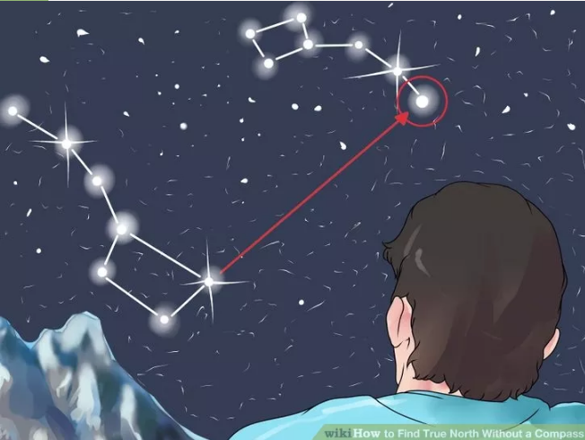
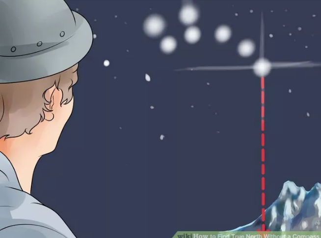

Cep telefonu, GPS gibi teknolojik ilerlemeler ile dünya üzerinde nerede olduğumuzu bulmak artık çok kolay. Fakat bu teknolojiler olmadan da yerimizi bulamaz mıyız? The Last Ship adlı bir diziyi seyrederken aklıma bu geldi, dizi bir felaket senaryosu ardından kalan bir savaş gemisinde geçiyor, bir bölümde bazı denizciler kaçırılır, gözleri bağlanıp bir yere tutsak götürülür. Aralarındaki bir denizci öğlen vakti güneşe bakarak dünyadaki yerini yaklaşıksal olarak hesaplamaya ugraşır. Bu hakikaten mümkün. Daha doğrusu enlem, boylam hesabı içinden enlem hesabı güneşin açısına bakarak mümkün, boylam hesabı başka bir şekilde. Ama önce kordinat sistemini görelim, ardından enlem, sonra boylam.
Enlemler dünya üzerinde yatay çizili çizgiler olarak görülebilir,
Bu sistemde doğal sıfır noktası tam ortadan geçen ekvator (equator) olacaktır. Boylam ise dikey kesilmiş dilimler olarak görülebilir,
Peki ölçü birimi olan açılar nereden geliyor? Açılar alttaki figür ile alakalı,

Yani \(\phi\) enlem, \(\theta\) ise boylam.
Güneşi kullanarak enlem ölçmek için güneş ışınlarının dünya ile nasıl bir açı oluşturduğunu düşünmek lazım,
Bu şekle göre güneşin ufuk noktasına göre nerede olduğu bize \(e\)’yi verecektir. Ölçümü yapan kişi teğet çizgi üzerinde duruyor tabii. Eski denizcilerin kullandığı sekstant (sextant) adlı bir araç \(e\)’yi ölçebilir (alttaki resimde görülüyor). Açıyı ölçmek için kolumu yere paralel de tutabilirdim, sonra kaldırıp öğle vakti tam güneşe doğru tutunca, önceki pozisyon ile aradaki açı, daha az kesin olsa da, bir açı ölçümü olabilir.
Bir diğer çözüm cep telefonlarındaki açı ölçüm programları (inclinometer app); bu programlar telefonun yere olan açısını detaylı bir şekilde ölçebiliyorlar, programı işletip telefonu güneşe tutmak yeterli!

Hesaba gelelim: iki üstteki resimde \(\theta + e = 90^\circ\) olduğunu görüyoruz. Ama bir pürüz daha var. İçinde olduğumuz mevsime göre dünyanın ekseni değişebilir!

Bu durumda dünyanın eğimi \(d\)’yi (declination) göz önüne almak zorundayız. Yeni açılara bakarsak, yeni formül
\[ e + (\theta - d) = 90 \]
olacak. Aynı eğimle, ama bu sefer güney yarımküre durumunda,
\[ e + \theta + d = 90^{\circ} \]
\[ \theta = 90^{\circ} - e - d \]
İyi haber şu, mevsimleri yaratan şey dünyanın eğimi olduğuna göre, içinde olduğumuz mevsimden hareketle eğimi yaklaşık olarak hesaplayabiliriz. Hatta bir formüle göre yılın kaçıncı gününde olduğumuzu direk \(d\)’ye çevirmek mümkün [2], ki \(N\) yılın başından bugüne geçmiş olan gün sayısı,
\[ d = -23.44^{\circ} \cdot \cos \bigg[ \frac{360^{\circ}}{365} \cdot (N + 10) \bigg] \]
def decl(month, day):
n = (month-1)*30. + day # yaklasik gun hesabi, her ayda 30 gun
return -23.44 * np.cos( np.radians(360/365. * (n+10.)) )
print decl(9,20) # eylul 20
print decl(1,10) # ocak 101.51207805509
-22.0644779225Soru
ABD’de Philadelphia’dayız, güneşin açısını 30 derece olarak ölçtük. Tarih Ocak 10, dünyanın eğimi \(d=-22\). Philadelphia hangi enlemdedir?
Cevap
e = 30; d = -22
print 'enlem', 90 - e + d, 'derece'enlem 38 dereceSoru
Eylül ayında Miami’deyiz; öğlen vakti güneş 65 derecede. Enlem nedir?
Cevap
e = 65; d = 1.5
print 'enlem', 90 - e + d, 'derece'enlem 26.5 dereceBoylam
Boylamı bulmak için güneşin açısı yeterli değil; Bu problem aslında denizcileri, bilimcileri çok uzun süre uğraştırdı, Galileo’dan, Newton’a kadar pek çok kişinin zihnini kurcaladı. Bu konunun modern bilimin gelişmesi, Batı’nın okyanusları keşfiyle paralel bir tarihi var. Boylam olmadan gemiler okyanusta kayboluyorlardı, hatta pek çok denizci bu sebeple hayatını kaybetmiştir.
İlk başta bilimciler boylamı güneşe, sonra ay’a, sonra diğer gezegenlere bakarak hesaplayabileceklerini düşündüler. Galileo Jüpiter’i baz alan bir metot buldu, fakat icat ettiği alet gemilerde kullanılabilecek türden değildi. Pek çok diğer bilimci denedi; Newton ölümüne dek bu işin gezegenler üzerinden çözülebileceğine inandı. İngiliz hükümeti bu buluş için bir mükafat başlattı (Batı’ya kaybolmadan seyahat karlı bir işti tabii), [3]’e göre bu mükafat devlet tarafından fonlanmış ilk ciddi modern bilimsel araştırmadır.
Çözüm ilginç bir şekilde bir saat ustasından geldi. Gerçi saat bazlı boylam hesabı yapılabileceğini pek çok kişi biliyordu, fakat denizcilerin yanında götürebileceği geri kalmadan işleyen saat yapmak zor bir işti. John Harrison bunu başardı. Saat ne işe yarar? Şöyle; eğer limandan ayrılmadan önce saati çıkış şehri (mesela Londra) zamanına ayarlarsak, diyelim Jamaika’ya geldik, oradaki yerel saate bakarız, en azından güneş en tepede olduğu zaman öğlen vakti olduğunu biliriz, diğer yandan getirdiğimiz saat hala Londra zamanını gösterecektir. Zaman dilimlerinde her dakika 1/4 derece anlamına gelir. Böylece zaman dilimi farkından hareketle hangi boylamda olduğumuzu hesaplayabiliriz, aradaki farkı dakika olarak 0.25 derece / dakika ile çarparız, ve boylamda kaç derece ileri ya da geri gittiğimizi bulabiliriz.
Örnek
Doğu’ya seyahat ettik, yerel saat öğlen, yanımızdaki saat 4:17 diyor. Doğu’ya gittiğimiz için Greenwich’ten ilerideyiz, aradaki fark 7 saat 43 dakika. Boylam nedir?
print ((7*60)+43) * 0.25, 'derece E (Dogu)'115.75 derece E (Dogu)Örnek
Kaptan Cook bir seyahatinde vardığı bir limanda şu hesabı yaptı; öğlen vaktiydi, yanında getirdiği saat Londra için sabah 5:06 diyordu.
print ((5*60)+6) * 0.25, 'derece W (Bati)'76.5 derece W (Bati)Cook ayrıca güneş eğimine bakarak 37.3 derece kuzeyde olduğunu da bulmuştu, yani kordinatları \(37.3^\circ N, 76.5^\circ E\).
Hangi Şehre Yakınız
Altta dünyanın tüm bilinen, büyük şehirlerini iceren bir CSV bazlı veri tabanını kullanarak bu sehirlerden hangisine yakın olduğumuzu bulabilecek bir script veriyoruz.
import pandas as pd
import math
def distance(lat1, long1, lat2, long2):
degrees_to_radians = math.pi/180.0
phi1 = (90.0 - lat1)*degrees_to_radians
phi2 = (90.0 - lat2)*degrees_to_radians
theta1 = long1*degrees_to_radians
theta2 = long2*degrees_to_radians
cos = (math.sin(phi1)*math.sin(phi2)*math.cos(theta1 - theta2) + \
math.cos(phi1)*math.cos(phi2))
arc = math.acos( cos )
return arc
def find_city(lat,lon):
dist = df.apply(lambda x: distance(lat,lon,x['lat'],x['lng']), axis=1)
return dist.argmin()
df = pd.read_csv('world_cities.csv',index_col=['city','country','province'])
df = df.drop(['city_ascii','pop'],axis=1)
print df[1000:1005]
print '\n', find_city(41.0082, 28.978) # bir test lat lng iso2 iso3
city country province
Itabuna Brazil Bahia -14.789602 -39.280016 BR BRA
Itamaraju Brazil Bahia -17.039594 -39.529949 BR BRA
Guanambi Brazil Bahia -14.229585 -42.789983 BR BRA
Porto Seguro Brazil Bahia -16.429606 -39.080028 BR BRA
Valenca Brazil Bahia -13.359612 -39.080028 BR BRA
('Istanbul', 'Turkey', 'Istanbul')Kaptan Cook hangi şehire yakındı?
print find_city(37.3, -76.5) # Bati, W eksi olarak gosteriliyor('Hampton', 'United States of America', 'Virginia')Cook ABD Virgina eyaletine gelmiş.
Saat ve boylam kullanarak dünyada çok detaylı yer bulunabilmesi keşif mekanizmasını temelden değiştirdi. Diğer taraftan bakılırsa, mesela {} gibi kitaplarda iddia edilen “Çin (ya da diğer bir başka) medeniyetin filanca kıtayı çok önceden keşfetmiş olduğu’’ gibi fikirlerin doğru olamayacağını anlıyoruz, çünkü bu medeniyetler global enlem ve boylam bilmeden seyahat ediyorlardı, bu sebeple tüm dünyanın haritasını çıkaracak durumda değildiler. Olsalar Çin’in hemen dibindeki Avustralya’yı kolonize etmiş olması gerekirdi, onun yerine İngiltere saatli yöntemi sayesinde oraya geldi, oranın bir kıta olduğunu anladılar, o kıtanın keşfi bu oldu. Herkes muhakkak tarihinde cevher görmek ister (ya da bir başkasınin tarihine meraklı olan egzotik farklılıklar arar), fakat gerçekleri fazla çarpıtmamak gerekir.
Peki saat bazlı sistem öncesi ne kullanılıyordu? Pusula bazlı hesabı seyrüsefer (dead-reckoning) tekniği, belli bir yönde kabaca ne kadar seyahat edildiğinden hareketle başlangıç noktasından gelinen yer bulunuyordu, mesela “kuzey yönünde 10 kilometre gittim, sonra doğu yönünde 5 kilometre’’ gibi.. Fakat bu tekniğin yanlış hesaplara, kaybolmaya çok açık olduğu bilinmektedir, ve bir global teknik bulunur bulunmaz o kullanılmaya başlanmıştır.
Pusula Olmadan Yön Bulmak
Pusulasız doğu, batı gibi yönleri nasıl buluruz? Birinci yöntem [4] gündüz zamanı güneş, gölge kullanıp biraz zaman tutarak yapmak. Yere bir çubuk takın, gölgesinin nereye gösterdiğini işaretleyin, sonra 15 dakika bekleyin, gölge uç noktayı bir daha işaretleyin. Güneş doğudan doğup batıdan battığı için sağdaki (E) gölgesi soldaki (W) gölgesine geçmiş olmalı, bu hayali çizgiyi arkanıza alırsanız baktığınız yön kuzey (N) yönü olmalı.

İkinci yöntem gece zamanı, alttaki yıldız düzenini bulun,

Bu yıldız kümelerinden sağda olanının uç noktası sağa doğru uzanır. Bu uzantının geldiği son noktadan dünyaya doğru düz bir çizgi çekin, bu kuzey yönüdür.

Üçüncü yöntem gündüz zamanı saat öğlen 12:00’de güneşin yerden direk yukarı gidecek şekilde (ve eğim tabii ki 90 dereceden az olacak şekilde) hangi yönde olduğuna bakmak, o yön eğer kuzey yarımkürede isek güneye işaret eder, eğer güney yarımkürede isek kuzey yönüne işaret eder.
Eger saat 12:00 degil ise alttaki kol saati yontemi ise yarar.

Saatin ufak kolunun (tabii saat doğru zamanı göstermeli) güneşe doğru durduğu durumu düşünürsek, o kolun ve büyük kolun oluşturduğu açıyi hayal ederiz ve bu açının tam ortasından çıkan bir çizgiyi düşünelim, bu çizgi kuzey yarımkürede güneye doğru işaret eder [5].
Kaynaklar
[1] Vaughen, Determining Latitude and Longitude from the Sun, https://www.youtube.com/watch?v=ircLt-qvl3M
[2] Wikipedia, Position of the Sun, https://en.wikipedia.org/wiki/Position_of_the_Sun
[3] Sobel, Longitude
[4] Wikihow, How to Find True North Without a Compass, http://www.wikihow.com/Find-True-North-Without-a-Compass
[5] HowStuffWorks, How to Find True North, https://adventure.howstuffworks.com/survival/wilderness/true-north2.htm